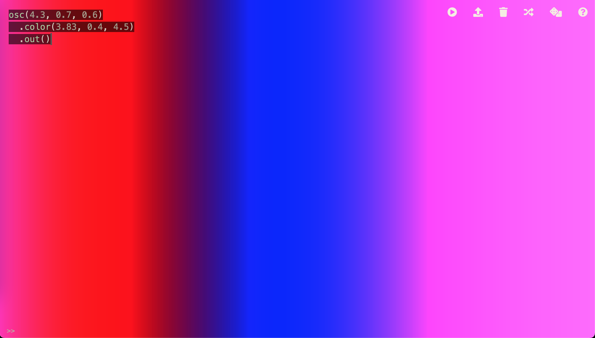
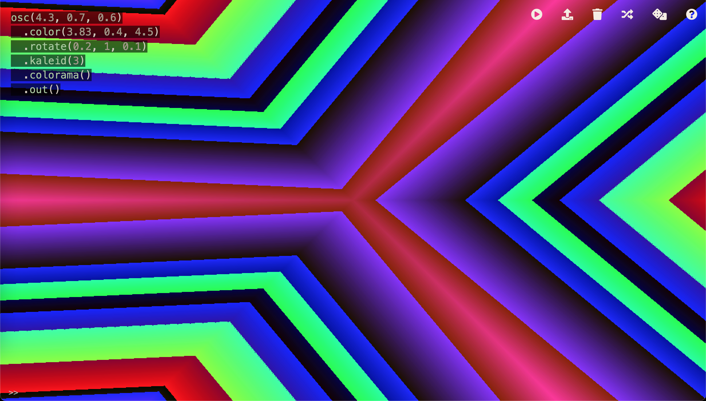

Experiments with the Hydra video synth
Work in progress
This page documents my experiments in the Hydra browser-based video synthetiser.
Hydra can be quite a useful tool when creating video art, as it can generate many different types of visuals, even ones reacting to audio or cursor movement, using its programming language. These video patterns can then be converted to composite using a simple converter and used as a source for video mixers and processors.
A simple colour rotation program
To start off, I checked out the "Getting Started"
page, and tried writing a simple program.
Following the tutorial, I started by using the osc command to create an oscillator, and the out
command to display it.
This produces some simple moving vertical bars. By changing the values in the oscillator, it's possible to vary the
signal it generates.
It's then possible to modify the signal even further, in a variety of ways, such as with the color
command.
The results look like this:

By changing the values in the oscillator and in the color command, we can vary the output considerably.
This is already quite useful as a video source, but we can continue to change the output even more by using various
transformation commands, such as kaleid (which acts as a kaleidoscope) and colorama.
Once again, we can observe the results, which are now considerably more animated:
